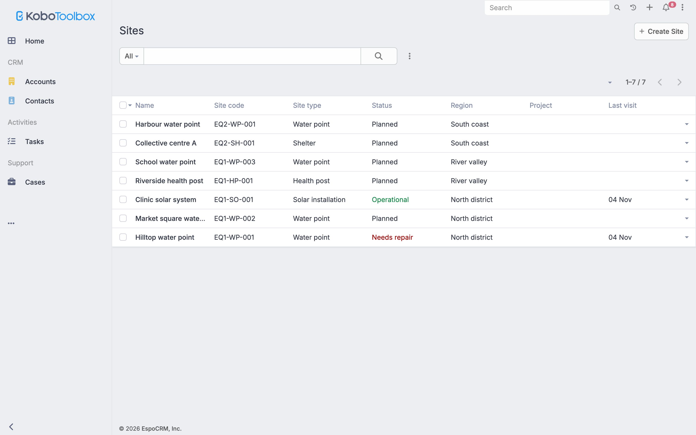
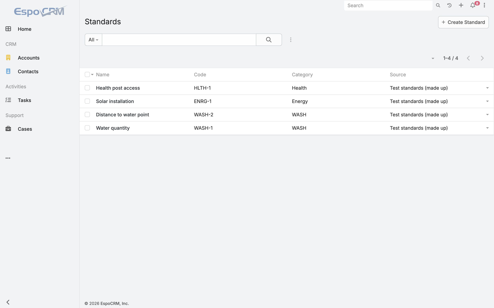

Registering a site
The Site registration form asks:
- which response the site belongs to (from
responses.csv); - its code, name, type and region;
- its location, installation date and equipment;
- a photo;
- the standard it follows (from
standards.csv), with the standard's requirement shown on the form.
Each submission becomes a Site in EspoCRM, linked to its response and to its standard, and in the response's team. Only the response's members see it. Registered is when the form was finished.
- Registering the same site code again updates that site; it doesn't make a second one.
- The site's page shows a note saying which submission updated it.
![The site Hilltop water point: site code EQ1-WP-001, type Water point, status Needs repair, region North district, response Earthquake response, Testland North, installed 20 Oct, last visit yesterday, equipment Hand pump (India Mk II), 2 taps, soak pit, and a photo; standard Distance to water point (linked by its code, WASH-2); registered today. The stream has the site visit by Rui Roster: condition Needs repair, notes Pump handle loose, seal leaking; spare seal needed, with the visit's photo; then kobo-site-visits updated this site to Needs repair, and kobo-sites created it.](static/shots/site.jpg)


Lists on Kobo forms
A [[list]] in a bridge template says:
- which records: an entity, a filter, and optionally a team;
- which columns;
- which forms get the file.
The bridge puts it on those forms as a CSV media file, replacing the old one and redeploying, whenever it changes. Forms then use it with select_one_from_file, pulldata() or search(). These are the files the bridge left on the test forms:
sites.csv on the earthquake response's visit form: that response's sites only.
name,label,status,region
EQ1-HP-001,EQ1-HP-001 · Riverside health post,planned,River valley
EQ1-SO-001,EQ1-SO-001 · Clinic solar system,operational,North district
EQ1-WP-001,EQ1-WP-001 · Hilltop water point,needs_repair,North district
EQ1-WP-002,EQ1-WP-002 · Market square water point,planned,North district
EQ1-WP-003,EQ1-WP-003 · School water point,planned,River valleystandards.csv on the registration form, with the requirement for pulldata():
name,label,requirement,category
ENRG-1,ENRG-1 · Solar installation,Panels anchored; battery enclosure ventilated and locked,Energy
WASH-1,WASH-1 · Water quantity,At least 15 litres per person per day,WASH
WASH-2,WASH-2 · Distance to water point,No household more than 500 m from a water point,WASH
...responses.csv: active responses, by their EspoCRM id, so a registration links straight to its response.
The template for sites.csv:
[[list]]
file = "sites.csv"
entity = "CSite"
team = "Response: Test EQ 1" # this response's sites only
order_by = "siteCode"
columns = { name = "siteCode", label = "{siteCode} · {name}", status = "status", region = "region" }
forms = ["Site visit - Test EQ 1 (espo-kobo test)"]Each upload is a new version of the form, so the bridge uploads at most every BRIDGE_LIST_MIN_SECONDS (a minute on the test instance; 15 minutes is better for real). Phones get the new list when they next update the form.
Follow-up visits
The Site visit form picks the site from sites.csv, and shows its status on record (pulldata()). It then asks for the date, the condition now (Operational, Needs repair, Decommissioned), notes and a photo. For each visit the bridge:
- finds the site by its code: exactly one, or the visit is recorded as not applied, never guessed;
- sets its status and last visit, and nothing else. The bridge's user for visits may edit only those two fields;
- adds a note to the site with what was found and the photo, marked with the submission's uuid, so a visit is never applied twice;
- updates
sites.csvwith the new status.
This is Kobo in a box's follow-up mechanism (open cases picked on a follow-up form), made general: any entity, found by any field.
EspoCRM as the response's store
For a project or a response, EspoCRM can hold what the forms need and what they produce:
- sites and installations;
- standards;
- partner organisations;
- open cases;
- volunteers.
Staff keep each list in one place, with access by team. The Kobo forms are fed from it, and add to it.


standards.csv.Photos and files
Photos and files submitted with a form are copied into EspoCRM, onto the site, the case or the visit's note. Staff see them there without a Kobo account, under the record's access rules: in testing, another consortium's partner couldn't open a case's file.
The bridge only copies:
- files an answer refers to, in repeat groups too, and not deleted ones (as kobo2logie does);
- files from its own Kobo server, so a submission can't make it fetch anything else;
- files up to
media_max_mb(10 MB). A bigger file is named on the record instead.
Limits
- The whole list goes to every phone with the form. Only the columns a template names are included. Never put personal data in a list.
- One list per team means one
[[list]]per response. A new response's visit form needs its own connection (copy the site-visit connection's template). One form for all responses could use one list and achoice_filteron the response, if its users may see every response's sites. - The site visit form in Enketo or KoboCollect wasn't shown here (the test account's forms need a Kobo login). The lists were checked on the forms through KoboToolbox's API.